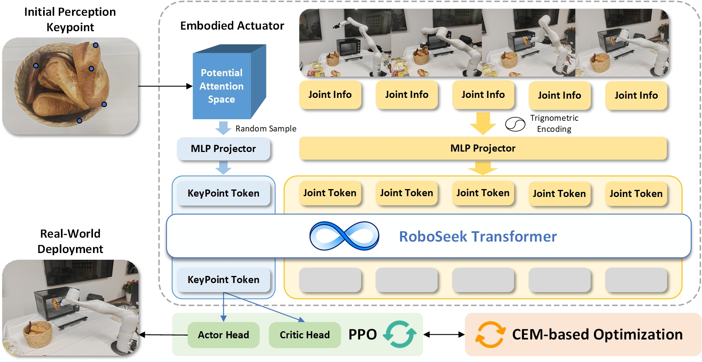
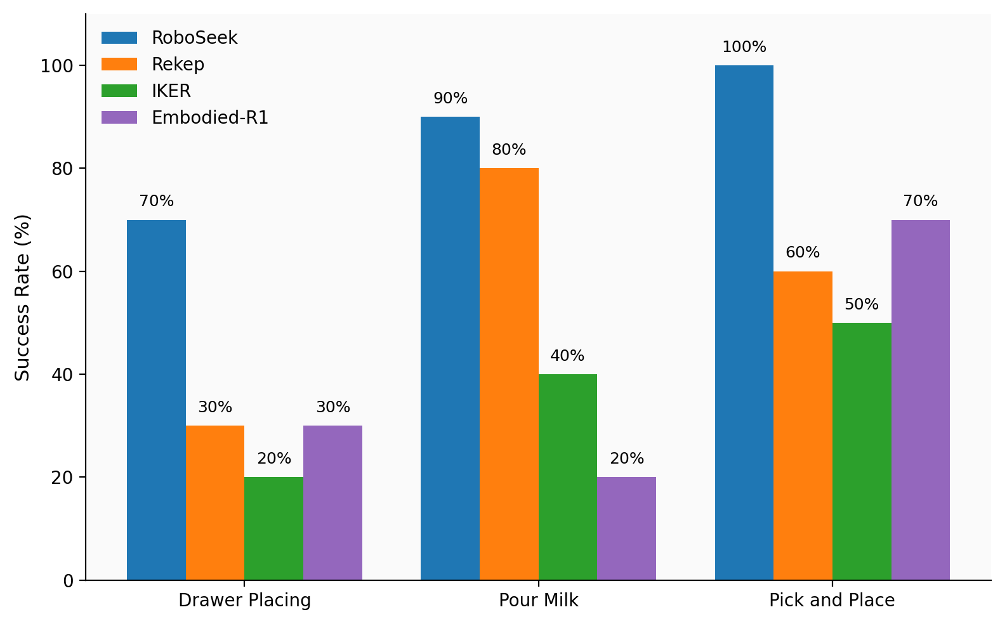
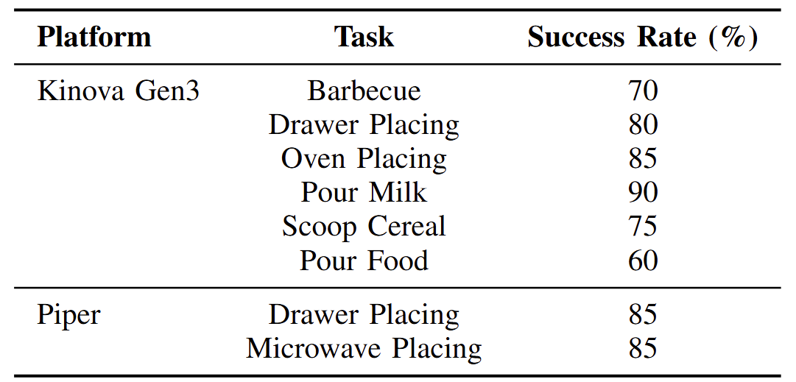

Optimizing and refining action execution through exploration and interaction is a promising way for robotic manipulation. However, practical approaches to interaction-driven robotic learning are still underexplored, particularly for long-horizon tasks where sequential decision-making, physical constraints, and perceptual uncertainties pose significant challenges. Motivated by embodied cognition theory, we propose RoboSeek, a framework for embodied action execution that leverages interactive experience to accomplish manipulation tasks. RoboSeek optimizes prior knowledge from high-level perception models through closed-loop training in simulation and achieves robust real-world execution via a real2sim2real transfer pipeline. Specifically, we first replicate real-world environments in simulation using 3D reconstruction to provide visually and physically consistent environments, then we train policies in simulation using reinforcement learning and the cross-entropy method leveraging visual priors. The learned policies are subsequently deployed on real robotic platforms for execution. RoboSeek is hardware-agnostic and is evaluated on multiple robotic platforms across eight long-horizon manipulation tasks involving sequential interactions, tool use, and object handling. Our approach achieves an average success rate of 79%, significantly outperforming baselines whose success rates remain below 50%, highlighting its generalization and robustness across tasks and platforms. Experimental results validate the effectiveness of our training framework in complex, dynamic real-world settings and demonstrate the stability of the proposed real2sim2real transfer mechanism, paving the way for more generalizable embodied robotic learning.
Method Overview

Figure 2. Overview of the RoboSeek method.
Given visual priors from high-level perception model, we construct a potential attention space. Then we leverage reinforcement learning in simulation with a transformer policy to learn an embodied executor in the attention space. Furthermore, we adopt the cross-entropy method to refine the attention space. Our real2sim2real pipeline achieves robust and stable control in long-horizon, complex manipulation tasks, highlighting its generalization ability across diverse robotic platforms.
Results
Roboseek achieves an average success rate of 79%, significantly outperforming baselines whose success rates remain below 50%. Experimental results demonstrate that RoboSeek is capable of handling long-horizon, complex manipulation tasks with high stability and robustness, and validate the effectiveness of our training framework.

Success rates for different tasks using RoboSeek and Baselines.

Success rates of our method on real-robot domestic tasks. Each task is run for 20 trials.